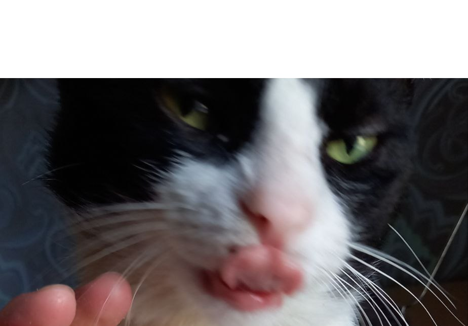
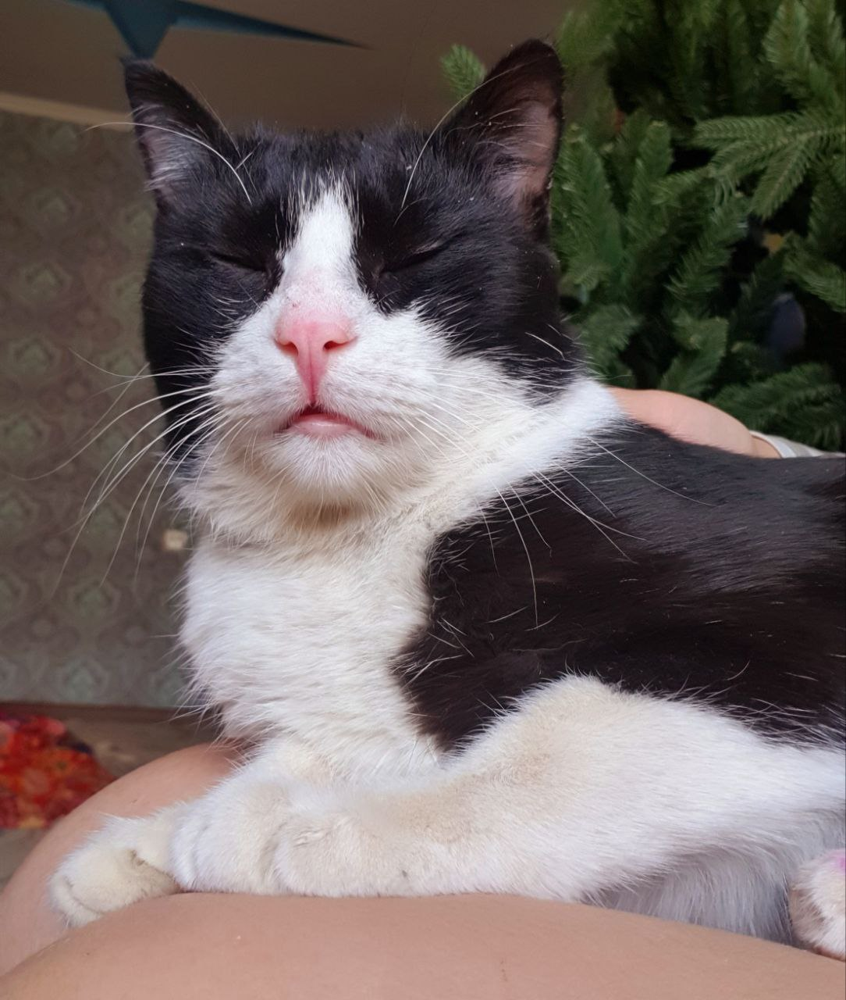

BARS IS LOVE BARS IS LIFE

Зачем человеку кошка?
Главной причиной появления кошки в доме является острая
нужда в любви и внимании. Эти животные сильно привязываются
к хозяевам, проявляют настоящие чудеса верности и преданности.
Кошка всегда рада приходу хозяина, готова к общению.
Как коты привязываются к человеку?
Кошки привязываются к своему владельцу так же,
как собаки и маленькие дети — разница лишь в том,
что коту достаточно видеть вас, чтобы чувствовать
себя в безопасности, а ребенку и собаке необходимо
вступать с вами в контакт.
24 июн. 2021г.
Что такое кототерапия?
Присутствие в доме кошки снимает стресс и борется с хронической усталостью, а умиротворяющее мурлыканье, сродни медитации или звукам природы, помогает погрузиться в глубокий сон и даже унять физическую боль.

Как долго кошка может помнить своего хозяина?
С помощью нескольких экспериментов удалось установить, что кратковременная память кошки составляет около 16 часов, что гораздо больше, чем у собак, у которых этот показатель достигает всего 5 минут. А вот долговременная память у животного составляет весь период их жизни.